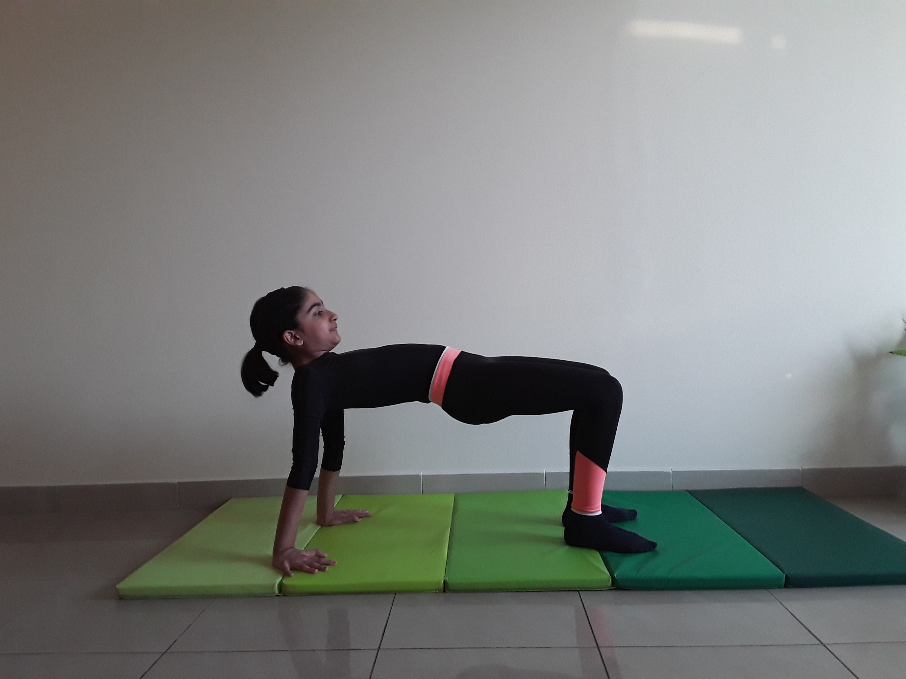

TABLE POSE

Steps to perform Table Pose
- Begin by sitting on the floor with your legs extended in front of you and your arms resting at your sides in Seated Staff Pose (Dandasana).
Bend your knees and place your feet flat on the floor.
-
Place your hands several inches behind your hips, shoulder-width apart. Press your palms flat, and turn your fingertips inward so they point in the same direction you are facing (toward your toes).
-
Inhaling, press firmly into your hands and feet. Straighten your elbows, and lift your hips up toward the ceiling. Draw your shoulder blades firmly into your back and lift your chest. Try to bring your chest, torso, and knees into one straight line, parallel to the floor.
-
Keep your legs active and firm, but do not squeeze your buttocks. Press down through all ten toes.
-
If you are comfortable here, then gently drop your head back so the crown of your head faces the floor. Gaze gently at the wall behind you. Breathe softly.
Hold for 5-10 breaths. To release, slowly lower your hips to the mat. Extend your legs and come back into Dandasana.